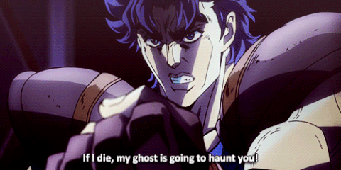
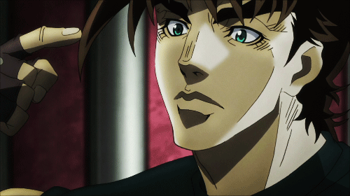
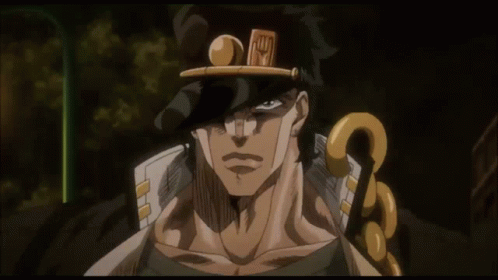
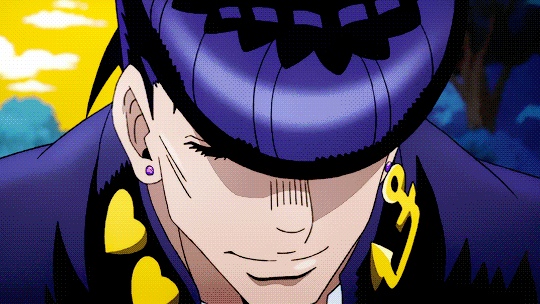
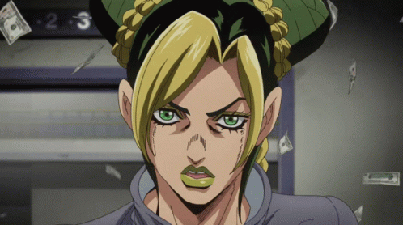

Jonathan Joestar
Este es Jonathan Joestar

Es el protagonista del primer arco argumental de JoJo's Bizarre Adventure, "Phantom Blood".
Jonathan es una persona muy alta (1.95 m/6'5") y musculosa con una postura de caballero. Su vestimenta típica tiende a reflejar su trasfondo noble, que se caracteriza por túnicas estilizadas sobre camisas de manga larga. Artículos de ropa recurrentes incluyen un cravat, una corbata de pajarita, botas gruesas y un chaleco.
Jonathan es una persona inteligente y un pensador muy competente en combate.
Jonathan tiene un arsenal de técnicas de artes marciales antiguas, la mayoría heredados de Will A. Zeppeli y que involucran Hamon, a su disposición. Algunas son su creación original, cada una terminando con "Overdrive".
Un usuario experto de Hamon como Jonathan tiene la capacidad de caminar sobre el agua, fortalecer los objetos y aumentar su potencia, aumentar la altura de salto, y mucho más.
Algunas Curiosidades
- De acuerdo con una entrevista con Araki, el nombre de Jonathan se inspiró en un restaurante familiar, "Jonathan's", en el que él y su editor se reunían con frecuencia por la noche tarde para discutir ideas.
- Jonathan tiene una apariencia y físico similares a Kenshirō de la popular serie manga y anime Hokuto no Ken.
- Araki afirmo que no le gusto mucho la personalidad de Jonathan ya que era demasiado bueno y si tenia la oportunidad de volver a dibujar la parte uno cambiaría la personalidad de Jonathan, al final en la parte 7 creo la versión alternativa de Jonathan (Johnny Joestar) con una personalidad totalmente distinta al original.
- Es el segundo Jojo mas joven en morir con 20 años, solo por detrás de Jolyne quien murió con 19 años.
- Debido a que el concepto de La Marca de Nacimiento Joestar no se introdujo hasta Stardust Crusaders, no se muestra que Jonathan lo tenga en el manga. Las adaptaciones posteriores muestran la marca de nacimiento de Jonathan, como el OVA de 2000 durante el flashback que muestra la muerte de Jonathan, o el anime de 2012 cuando derrota a Tarkus.
Frase
¡¡¡Hay momentos en que un caballero tiene que ser valiente y luchar, aún cuando su adversario es más grande que él y sabe que va a perder!!!
Joseph Joestar
Este es Joseph Joestar

es el protagonista de la Parte 2: Battle Tendency, un personaje principal en la Parte 3: Stardust Crusaders, y un personaje secundario en la Parte 4: Diamond is Unbreakable.
Con tan solo 18 años de edad, Joseph es ya bastante alto (195 cm / 6'5 ") guapo y fornido, de ojos claros, con el pelo corto, oscuro y descuidado, partes de su flequillo se extienden hacia el exterior en forma de espigas, además de guardar un enorme parecido a su abuelo Jonathan Joestar.
Es el segundo JoJo más recurrente en la serie, después de su nieto Jotaro Kujo, y es a su vez uno de los personajes más reconocidos de la serie.
Joseph es un joven impetuoso y confrontacional exaltado. Rápido en responder violentamente ante la más leve provocación, usó regularmente el Hamon para responder a aquellos que le agraviaron ya desde su juventud. No teniendo respeto por la autoridad excepto por la de su abuela Erina, y más tarde por Lisa Lisa, ha antagonizado con policías y mafiosos por igual. Además es un individuo mal hablado, y regularmente se burla provocando a sus enemigos, disfrutando agraviándolos. Se burló notablemente de Kars cuando lo lanzó al espacio, alegando haber planeado de nuevo todo desde el principio sólo para fastidiarlo.
Joseph es bastante flirteador. Regularmente comenta sobre la voluptuosidad de las mujeres y fue audaz en su coqueteo con la que sería años después su futura esposa Suzi Q. Su comportamiento antagónico hacia Caesar pudo haber sido por celos mayormente porque él podía seducir a las chicas tan fácilmente. No sabiendo que Lisa Lisa era su madre, disfrutó espiándola y cuando prácticamente se reveló como su madre, le preocupaba más su edad real.
Joseph heredó un potencial innato para el Hamon y sus capacidades de su abuelo, Jonathan Joestar, así como de su madre Lisa Lisa. Adicionalmente, utiliza técnicas comúnmente presentes en la magia escénica para confundir a sus enemigos. Después de su entrenamiento en Hamon, Joseph frecuentemente combina su Hamon con otros objetos para realizar ataques complejos y creativos.
Algunas Curiosidades
- Al ser de origen británico, a menudo Joseph se puede ver que dice varias frases en idioma inglés. Sus frases incluyen "OH! NO!" (se utiliza tanto en ambas Parte 2 y Parte 3) y "Oh! My! God!" (utilizada exclusivamente en la Parte 3 y brevemente en la parte 4) como algunos pocos ejemplos.
- Ha sobrevivido a cuatro accidentes aéreos (dos en la Parte 2 y dos en la Parte 3); esto fue mencionado en dos ocasiones a lo largo de la Parte 3.
- Joseph ha aparecido en tres arcos argumentales de la historia, empatando con Dio por el segundo lugar en mayor cantidad de apariciones, y detrás de Jotaro que ha aparecido en cuatro arcos argumentales de la historia.
- Joseph es la única persona que es capaz de utilizar tanto Hamon y tener un Stand propio. (Se podria decir que Jonathan tambien pero el lo desperto cuando Dio le robo el cuerpo)
- Joseph, de entre todos los Jojos, ha vivido la vida más extensa hasta la fecha.
- Curiosamente, la apariencia de Joseph en la Parte 3 comparte mucho en común con Indiana Jones. Ambos tienen apariencias de mayor edad que consisten en cabello gris, barba y un sombrero fedora. Ambos estaban vivos durante la Segunda Guerra Mundial, y ambos utilizan látigos (en el caso de Joseph, el látigo de Hermit Purple).
- Joseph estuvo a punto de ser protagonista de una película, ya que al momento de salir la película de JoJo no Kimyō na Bōken: Phantom Blood el estudio estaba trabajando en una película de Battle Tendency, lastimosamente el fracaso de la película de Phantom Blood ocasiono que el estudio cancelara la segunda película.
Frase
¿Ho-la? ¿Podrías decir eso de nuevo? ¿Más lentamente? ¿En un idioma que yo entienda? ¡Dependiendo de lo que hayas dicho, podría patear tu culo!
Jotaro Kujo
Este es Jotaro Kujo

es el protagonista de la Parte 3: Stardust Crusaders. También realiza un rol prominente en la Parte 4: Diamond is Unbreakable, uno secundario en la Parte 5: Vento Aureo, y nuevamente con un rol clave en la Parte 6: Stone Ocean.
Serio, estoico e inteligente, Jotaro brinda gran poder y estabilidad a sus aliados. También es el primer JoJo introducido con un Stand y uno de los personajes más reconocidos de toda la serie.
el aspecto de Jotaro es el de un hombre bastante alto para los estándares de un japonés, midiendo 1,95 m, de un perfil atractivo de piel clara y bien fornido. Tiene cabello oscuro, una fuerte mandíbula, cejas marcadas y ojos claros. Además tiene un leve parecido a su tatarabuelo Jonathan Joestar y a su abuelo, Joseph Joestar, cuando era un hombre joven.
Jotaro es introducido como un rebelde tosco buscapleitos, pero tiene un corazón gentil y es leal a aquellos que le agradan. Es muy perspicaz, inteligente y de ingenio rápido, manteniendo una actitud ligeramente neutral o indiferente perpetuamente serena.
Su rasgo más notable es su naturaleza aparentemente distante. Es un individuo callado, a menudo satisfecho con expresarse en frases cortas. Araki ha explicado que cree que cualquier persona puede notar sus emociones con sólo mirarlo, y probablemente piensa que esforzarse de más en retratar cómo se siente sería una pérdida de tiempo, haciendo que los demás tiendan a percibirlo como insensible.[11]
Uno de los Stands más fuertes de la serie; Star Platinum posee sentidos, fuerza, resistencia, precisión y velocidad sobre-humanos. Al igual que otros Stands poderosos físicamente (o de corto alcance), Star Platinum sufre de un estrecho rango de actividad; sólo se activa en un radio de 2-3 metros de Jotaro.
Algunas Curiosidades
- En Stardust Crusaders cuando el Stand de Boingo predice la muerte de Jotaro por parte de una bomba, esta se parece mucho a la muerte que Jotaro tuvo en Stone Ocean.
- Es el personaje que en más partes de este manga ha aparecido, siendo un total de 4; Stardust Crusaders, Diamond is Unbreakable, Vento Aureo y finalmente, Stone Ocean.
- Jotaro al igual que Bucciarati casi muere al detener su corazón con su propio Stand.
Frase
¡No me importa si eres un fantasma, un demonio o un dios! ¡Si me atacas, te voy a matar!
Josuke Higashikata
Este es Josuke Higashikata

es el protagonista principal de la Parte 4: Diamond Is Unbreakable. Es el cuarto JoJo de la serie JoJo's Bizarre Adventure.
Josuke es un estudiante de primer año de preparatoria que reside en Morioh. Debuta en el volumen 29 (volumen 1 de Diamond Is Unbreakable) donde es buscado por Jotaro Kujo en nombre de Joseph Joestar por tener relación con la Familia Joestar, ya que Josuke es el hijo ilegítimo de Joseph.
es un joven alto de complexión promedia. Lleva un pequeño arete en cada oído. La cualidad más importante para él es su corte de cabello estilo pompadour bien mantenido; estilizado en base a un hombre desconocido que le salvó la vida cuando era niño.[3] Su pompadour tiene una tendencia a volverse erizado con su estado de ánimo, como cuando está irritado o enojado.
es un adolescente experimentado, seguro y valiente (aunque a simple vista no lo parezca). Amigable y leal, su personalidad cordial le ayuda a hacer amigos a lo largo de la historia.
se comporta como un adolescente que solo quiere pasar el rato, y aparte de su objetivo general de proteger a Morioh de cualquier amenaza de los Stands, se preocupa por cosas más ordinarias, como salir con sus amigos o jugar videojuegos.
El Stand de Josuke, Crazy Diamond, puede restaurar los objetos (y organismos) a un estado anterior en su historia. Es perfecto para reparar daños y curar lesiones (similar a Gold Experience).
Josuke es perspicaz, confiado y valiente, posee una considerable inteligencia fluida y una voluntad de ganar; igual que su padre.
Algunas Curiosidades
- Hasta Steel Ball Run, Josuke fue mencionado como el JoJo preferido de Araki. Él explica que, debido a la ambientación diaria de vecindario en general de Diamond Is Unbreakable, se sentía más conectado a Josuke, y lo considera algo como un amigo o un senior. Por el contrario, Jotaro era "más como una persona que uno mismo admiraría como a un héroe".[5]
- Los fans japoneses a veces se refieren a la Parte 4 como patty burger ("hamburguesa patty"), en referencia a la apariencia del corte de cabello pompadour de Josuke.
- El apellido de Josuke, Higashikata, se escribe con el mismo kanji como "touhou" (東方,?), la palabra japonesa para "del este" u "oriental". Los videojuegos de la saga Touhou Project han sabido hacer referencias a JoJo's Bizarre Adventure con frecuencia, ya que el propio creador es un fan declarado.
- La identidad del salvador de Josuke es una discusión recurrente en el fandom, desde que la parte 4 fue publicada en el semanal de Shonen Jump. En una entrevista en 1994 con el director de la OVA, Hirotuki Kotakubo preguntó sobre el flashback si fue Josuke que se conoció a si mismo, Hirohiko Araki contestó "Esto es irrelevante, eso fue solo su recuerdo". Más tarde el productor de la serie de David Production, Naokatsu Tsuda, también le preguntó a Araki su duda sobre quién era ese misterioso salvador durante la producción, lo cual este último se negó a contestar.
Frase
¿¡Qué cosa dijiste sobre mi cabello!?
Giorno Giovanna
Este es Giorno Giovanna

es el protagonista principal de la Parte 5: Vento Aureo (Golden Wind).
Es el primer hijo ilegítimo de DIO (el cual fue concebido con el cuerpo robado de Jonathan Joestar) en aparecer en el manga y en la posterior adaptación anime.
Giorno es un chico adolescente de estatura promedia y constitución delgada, mucho más pequeño en estatura que los JoJos anteriores. Tiene el cabello dorado de longitud moderada recogido trenzado en una cola de caballo, con tres “remolinos” o formas tortellini distintivos colgando sobre su frente.
Es un adolescente bastante serio, él no despega su mente de su misión y los logros que se propone. Aunque en algunas situaciones Giorno pensó en asuntos más mundanos, como la deliciosa pizza margarita de Nápoles, justo antes de recibir un ataque de Notorious B.I.G.. Giorno tiende a enfrentar las cosas con calma y una gran compostura, pero todavía puede estar ansioso cuando las cosas van a peor.
Al parecer Giorno heredó parte de las personalidades de Jonathan Joestar y Dio Brando, con el primero estando presente y mostrando su lado amigable hacia sus compañeros y aliados, y el último mostrando un lado despiadado y cruel hacia los enemigos.
Gold Experience es uno de los Stands más versátiles de la serie. Tiene la capacidad de crear y manipular vida al contacto con los objetos inertes, que Giorno utiliza con mayor frecuencia para producir plantas y animales pequeños. Ambas pueden ser utilizadas para una variedad de propósitos que van desde disfrazar a rastrear orígenes. Gold Experience Requiem es obtenido después de Giorno perfora a Gold Experience con la Flecha escarabajo.
Giorno es un táctico muy competente. Un observador por naturaleza, gusta de hacer valer las capacidades de sus adversarios y planear antes de actuar. A continuación, utiliza sus observaciones para sondear cualquier debilidad de su parte y predecir lo que harán, a menudo regresando sus movimientos en contra de ellos mismos.
Se ha demostrado que Giorno es hábil para cooperar con otros usuarios de Stands con la máxima eficacia, sobre todo con Guido Mista con el que es más cercano.
Algunas Curiosidades
- En la lista "Top 10 de Personajes Favoritos de Araki" en el año 2000, Giorno se clasifica en el puesto 5, siendo el segundo JoJo favorito de Araki y su tercer personaje favorito de la Parte 5; Mista ocupa el puesto 7, Diavolo en el 4to lugar, y Bucciarati en 3er lugar.
- Su manera de peinarse el flequillo se asocia con cucuruchos de chocolate: la notación "@@@" se refiere al peinado único de Giorno y es a menudo utilizado por los fans para referirse a él.
- Giorno imita el grito de batalla "Muda Muda Muda..." de su padre, solo gritando el último grito "Muda" como un golpe final. También exclama un "WRYYYYY!" durante su lucha contra Cioccolata.
- Giorno ha demostrado la capacidad de meter su oreja entera en su cabeza, y que era de hecho la primera habilidad que mostró cuando fue presentado.
Frase
Yo, Giorno Giovanna, tengo un sueño que sé es justo.
Jolyne Kujo
Este es Jolyne Kujo

es la protagonista de Stone Ocean. Es la hija de Jotaro Kujo y es la única "JoJo" femenina hasta la fecha.
Acusada de realizar un crimen que no cometió, fue enviada a la prisión de máxima seguridad Prisión Green Dolphin Street, donde descubre la fuente de la antigua aflicción legada de la Familia Joestar.
es una joven mujer de altura por encima del promedio y de una complexión física entre delgada y atlética. Sus ojos son a menudo representados de color azul-turquesa.
aprichosa, abrupta, e irritable con sus mayores, Jolyne en su adolescencia se consideraría fácilmente como una busca pleitos y causa perdida. Resentida hacia Jotaro por descuidar de ella, intentó varias veces captar la atención de su padre cometiendo múltiples delitos menores y fue a la cárcel varias veces a causa de estos.
Después de adquirir su Stand, Stone Free, y de serle revelado por Jotaro que él la apreciaba, Jolyne madura notablemente, llegando a ser más valiente y confiada. "Revivir" a Jotaro, que cayó en coma debido a que Whitesnake le robó su Stand y memorias, se convierte en su prioridad.
Posee una determinación feroz, lo que le permite atravesar muchas peleas e inspira en gran medida sus compañeros. Después de enterarse del plan de DIO, Jolyne se enorgulleció de su linaje y optó por continuar los esfuerzos de Jotaro para sellar la amenaza que DIO dejó tras de sí. Ella soporta estoicamente las dificultades que enfrenta y seguir adelante hacia su objetivo, haciendo caso omiso del sufrimiento y riesgos.
Stone Free es un Stand que otorga a Jolyne la capacidad de deshacer partes de su cuerpo en cuerdas. Esto lo convierte en un Stand muy versátil, ya que le permite tanto escuchar conversaciones ajenas, como escapar y ocultarse deshaciendo partes de sí misma.
El mayor activo de Jolyne es su imaginación. El poder versátil de su Stand le permite una amplia gama de movimientos que utiliza extensivamente. Por ejemplo, cuando Pucci utiliza a C-Moon para invertir el cuerpo de Jolyne, utilizó a Stone Free para crear un "Mobius Strip" dejándola con eficacia invulnerable a su poder.
Algunas Curiosidades
- La forma de transporte de Jolyne a veces consiste en balancearse en las cuerdas de Stone Free lo que recuerda mucho a la forma de transporte de Spiderman/Peter Parker e incluso este hace un pequeño cameo en el arco de Bohemian Rhapsody.
- Jolyne es la primera JoJo en aparecer en una secuencia de entrada de las más recientes adaptaciones al anime, aunque sólo fue en forma de cameo.
- Es la Jojo más joven en morir, con 19 años.
- Es la primer protagonista femenina conocida del Shonen.
Frase
¡Dame un jodido descanso! (やれやれだわ, yare yare dawa)
Johnny Joestar
Este es Johnny Joestar

es junto con Gyro Zeppeli, uno de los protagonistas principales de Steel Ball Run y un personaje menor en JoJolion. Es el séptimo JoJo de la serie JoJo's Bizarre Adventure.
Un anterior prodigio en turf, el cual enfermó de paraplejia después de recibir un disparo, Johnny se une a la carrera SBR para descubrir el secreto detrás de las Esferas de Acero de Gyro Zeppeli, ya que son lo único capaz de curar sus piernas. A lo largo de la carrera, Johnny se convierte en un usuario del "Giro " y de un Stand cuando adquiere a Tusk.
Johnny es la contraparte alterna de Jonathan Joestar, protagonista de la Parte 1.
es un joven de altura por debajo de la media, de contextura delgada y hasta cierto punto delicado. Sus ojos son de un color azul claro; su cabello es rubio claro y medianamente largo que le llega hasta los hombros y que se encrespa hacia arriba en los extremos. Johnny siempre lleva un gorro de lana de celeste con un estampado de pequeñas estrellas de cinco puntas. Su cabello sobresale de agujeros en cada lado de la parte superior de su gorro, dándole forma de cuernos cortos. En el gorro lleva cosida una herradura que cuelga de la parte delantera y en el espacio que queda entre ambas puntas de la herradura tiene estampada silueta de la cabeza de un caballo.
es un adolescente que es introducido sintiendo una gran depresión luego de sufrir un disparo que lo dejó parapléjico. Antes de conocer a Gyro, Johnny demuestra ser un persona que perdió su camino en la vida preguntándose por qué fue a la playa de San Diego, lugar del inicio de la carrera Steel Ball Run.
Johnny siempre se culpó por la muerte de su hermano Nicholas Joestar, a quien admiraba y deseaba ser como él. Debido a esto y su tensa relación con su padre, Johnny se volvió alguien inseguro de sí mismo hasta el punto de considerarse inútil, demostrado en distintas etapas de la carrera al enfrentarse a diversos enemigos.
Después de que Johnny es testigo de la habilidad que posee Gyro Zeppeli con las Esferas de Acero, llamada Giro, la cual hizo que Johnny pudiera mantenerse de pie por un instante, decide seguir a Gyro debido a que es alguien demasiado terco y tenaz. A pesar de su incapacidad, él es una persona auto-suficiente y es por esta razón que decide entrar a la carrera Steel Ball Run y seguir de cerca a Gyro con la esperanza de tener contacto y aprender la misteriosa habilidad.
Johnny primero busca el tutelaje de Gyro Zeppeli en los caminos del Giro para recuperar la movilidad de sus piernas. A menudo, Johnny canaliza el Giro con ayuda del uso de su Stand, Tusk; desarrollado inicialmente con el poder de la mano izquierda del Cadáver, y además con la ayuda de Gyro. A diferencia de Gyro que utiliza sus Esferas de Acero, Johnny usa sus uñas como arma.
Algunas Curiosidades
- Según Araki, él siempre quiso que el protagonista de la Parte 7 luchara contra la naturaleza misma mientras que al mismo tiempo, sus luchas le ayudarían en el camino hacia la madurez.
- Tiene un fetiche con las mujeres con picaduras de insectos.
- Araki afirmó que no le gustó mucho la personalidad de Jonathan ya que era demasiado bueno y si tenía la oportunidad de volver a dibujar la parte uno cambiaría la personalidad de Jonathan, al final en la parte 7 creó la versión alternativa de Jonathan (Johnny Joestar) con una personalidad totalmente distinta al original.
- Comparte similitudes con su contraparte Jonathan Joestar del Universo original:
- Ambos perdieron la cabeza, literalmente (Jonathan contra Dio, Johnny a causa del intercambio equivalente).
- Su rival forma parte de la Familia Brando, pero fue asesinado por alguien más (DIO por Jotaro, Diego por un tren, Diego Brando de Otro Universo por Lucy Steel).
- Ambos tuvieron una mascota de nombre Danny (Jonathan un perro, Johnny un ratón).
- Ambos fueron tutorados en una habilidad especial por un miembro de la Familia Zeppeli (Jonathan entreno para aprender sobre Hamon, Johnny practicaba para dominar el Giro).
- Solo se le muestra sonriendo cinco veces.
- Johnny es el único protagonista de JoJo's Bizarre Adventure con un hermano entero (a diferencia de Giorno, que tiene 4 medios hermanos).
- Johnny es el único Joestar en toda la serie que tiene cabello naturalmente rubio (Giorno se volvió rubio cuando obtuvo a Gold Experience).
- Johnny es el único JoJo que comienza como un personaje secundario en su respectiva parte.
- Las muertes de Johnny y Jonathan son similares, ya que ambos mueren a una edad temprana y ninguno de ellos fue enterrado en su tierra natal.
Frase
Ha sido, verdaderamente, un camino en círculo.